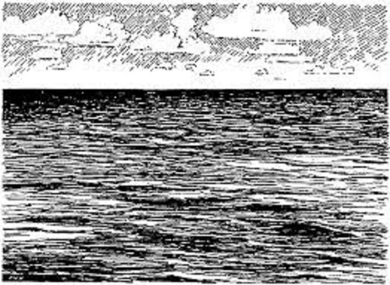

Maybe you should have reconsidered your choices. You are surprised in your cabin when those crew members burst in and at sword point lead you onto the deck. The Captain is also being held at sword point. One of the crewmen lowers the small boat used to go ashore. The crewman orders "Jump!" he says,"Unless, of course, you don't want a chance to live."
Another crew member takes his sword and prods you.
"You heard him. Jump!"
With that, you jump overboard and swim to the boat. The Captain is then ordered to jump also. "Since we have your charts, we don't need you after all."
You swim to the small boat and climb aboard. The Captain also gets on board the small boat. "I guess we'll both find out how good your navigation skills really are." You then begin to row, following the sun, hoping that you can navigate by dead reckoning to find an island before you die, either from lack of fresh water or starvation; or you go insane from exposure in the sun.
